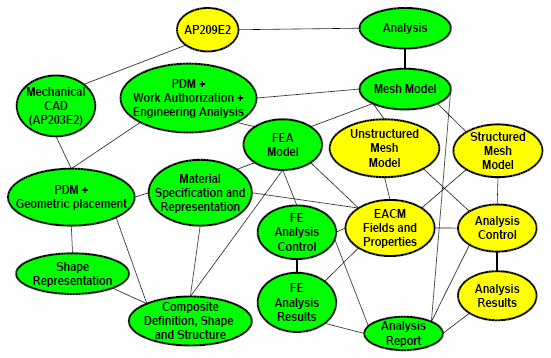

AP209 Modular Edition 2 Development Proposal
Keith Hunten, P.E.
Lockheed Martin Aeronautics Co.
Overview
- Modularization Approach
- High Level AP209E2 Composition
- Applicable Recent Integrated Resource Developments
- Required Integrated Resource Updates
- First Order Estimate of Modularization Tasks
Modularization Approach
- Primary Objective
- Modify existing modules (203E2, PDM)
- Create Materials, and Composites modules from AP209E1
- Create FEA modules from AP209E1
- Create EACM Fields modules from IRs
- Create Implementation and AP modules
- Stretch Objective
- Create Structured/Unstructured Grids and Analyses from IRs
- Fluid Dynamics and Heat Transfer are initial goals
- Create Nonlinear Analyses by enhancing IRs and Modules
High Level AP209E2 Composition

Applicable Recent Integrated Resource Developments
- Parts 50 and 51 provide the mathematical basis for the definition
and representation of fields and expressions
- Including external binary format representation
- Parts 52 and 53 provide the remaining basis for structured and
unstructured meshes
- Part 110 adds further detail for Fluid Dynamics
- Part 107 provides the linkage between existing Part 104-based
FEA and the above
|
| Part 50: |
| Mathematical constructs
|
|
| Part 51: |
| Mathematical description
|
|
| Part 52: |
| Mesh based topology
|
|
| Part 53: |
| Numerical analysis
|
|
| Part 104: |
| Finite element analysis
|
|
| Part 107: |
| FEA definition relationships
|
|
| Part 110: |
| Mesh based computational fluid dynamics
|
Required Integrated Resource Updates
- Extending and/or generalizing Part 104 and AP209
- Extend existing field representations to represent nonlinear
field components
- Add specialized nonlinear element types
- Add nonlinear boundary conditions and loads
- The general structured and unstructured grids and analysis
capabilities of STEP would need no further update as they now
adequately cover nonlinear analyses
First Order Estimate of Modularization Tasks
|
| Component |
| Hours
|
|---|
|
| Primary Objective
|
|
| Modify existing modules |
| 64
|
|
| Composites modules |
| 336
|
|
| FEA modules |
| 252
|
|
| EACM Fields modules |
| 186
|
|
| Implementation and AP modules |
| 82
|
|
|
|
|
| Total |
| 920
|
|
|
|
|
| Stretch Objective
|
|
| Structured/Unstructured Grids and Analyses |
| 200
|
|
| Nonlinear Analyses |
| 150
|
|
| Previous Total |
| 920
|
|
|
|
|
| Total |
| 1270
|